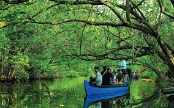
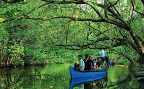
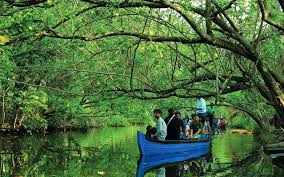
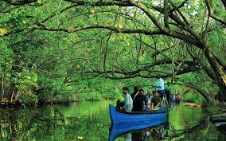

 

Kollam, also known as Quilon, is famous for its backwaters, Ashtamudi Lake, and historical significance. It's a gateway to the southern backwater destinations in Kerala.
Kollam is rich in cultural traditions and is known for its historical significance. It is home to various art forms and is a hub for cultural events and festivals.